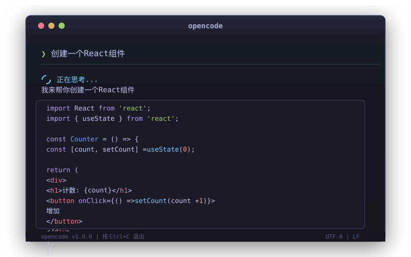

OpenCode 是一个 AI 编程助手，装完就能用，完全免费。
Windows： 双击 [Windows] 双击我安装.bat
macOS / Linux： 打开终端执行：
chmod +x 脚本/安装.sh
./脚本/安装.shopencode第一次启动会自动加载免费模型，稍等几秒就可以开始用了。

> 用 Python 写一个计算斐波那契数列的函数
> 帮我创建一个 React 计数器组件
> 解释一下这段代码是做什么的输入 /models 查看所有免费模型：
opencode/glm-4.7-free — 中文能力强opencode/minimax-m2.1-free — 速度快opencode/kimi-k2.5-free — 长上下文| 操作 | 说明 |
|---|---|
opencode | 启动 |
Ctrl+C | 中断 |
/models | 切换模型 |
/help | 查看帮助 |